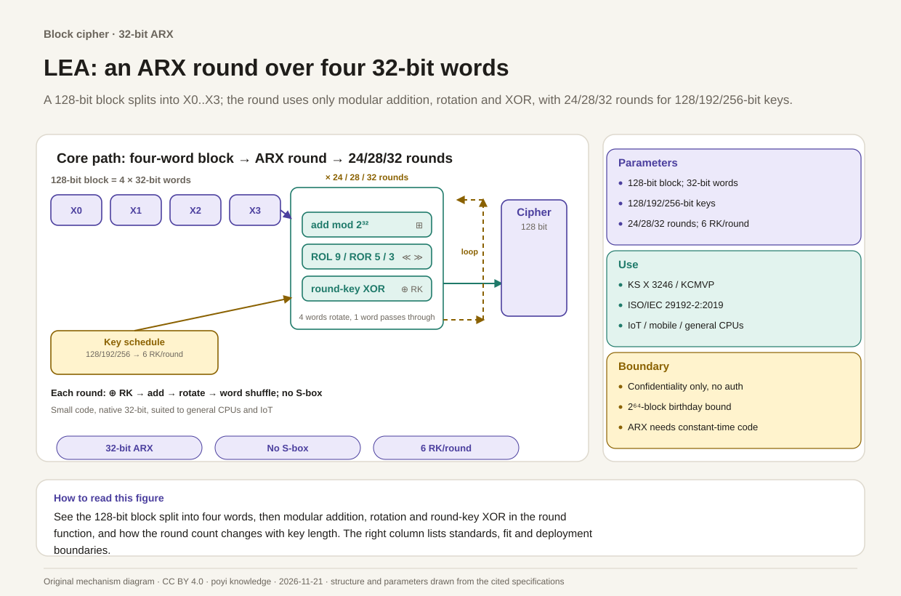
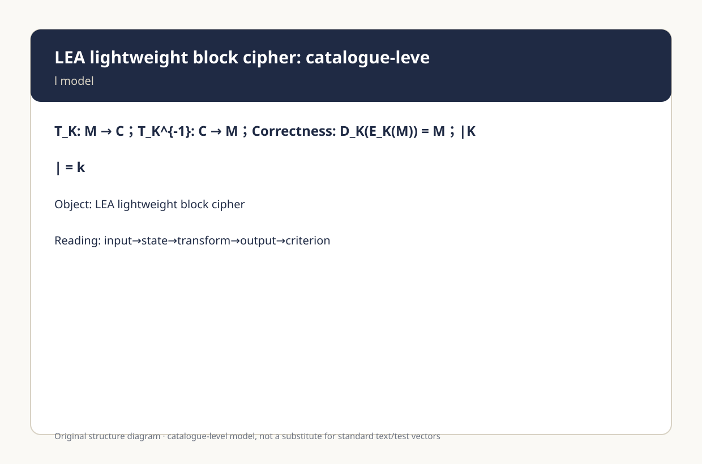

Principles
Algorithm: LEA (LEA 轻量级分组密码). ### 128-bit block and 32-bit ARX
LEA has a fixed 128-bit block split into four 32-bit words X0..X3. Its round function uses only three operations: addition modulo 2^32, bitwise rotation and XOR. Three sub-transforms use rotate-left 9, rotate-right 5 and rotate-right 3, mix two words with round keys and write back, while the fourth word moves directly to the next round; there is no S-box and no lookup table. ### Rounds and key schedule
LEA-128/192/256 runs 24/28/32 rounds, with six 32-bit round keys per round. The key schedule expands the master key into 6×(rounds) 32-bit words, with round constants derived from a golden-ratio constant; decryption runs the same round keys in reverse. A 128-bit block gives a 2^64 birthday bound, so multi-block data under one key must be capped.

Why it matters
LEA targets “software lightweightness”: 32-bit ARX instructions are one or a few native instructions on Intel, AMD, ARM and ColdFire, with small code, low register pressure and no table-lookup cache leakage. The paper's experiments show it faster than AES on those platforms, which suits phones, embedded gateways and bulk cloud encryption.
ARX has no S-box and a small hardware footprint, but differential and linear analysis apply directly to addition and rotation; implementations usually add masking or hiding for side-channel resistance. LEA's lightweight claim is “small code, high speed”, not “built-in side-channel protection”.
Applications
LEA is a Korean KS X 3246 standard and an approved algorithm in Korea's KCMVP cryptographic-module validation; it entered ISO/IEC 29192-2 in 2019 alongside PRESENT and CLEFIA as lightweight block ciphers. It appears in mobile devices, IoT firmware and crypto libraries that need a small code footprint.
LEA has implementations in Crypto++, Bouncy Castle and hardware IP, but its protocol adoption is far below AES; cross-organization interoperability still defaults to AES. Choosing LEA is usually about Korean compliance, code size or throughput on a specific CPU, not global ecosystem.
A shared name may belong to an algorithm, standard, event, person or term; this entry is responsible only for its catalogue binding and does not absorb adjacent records. If versions, regions or institutions define the name differently, the differences stay side by side.

Limits & attacks
The public literature has no practical key recovery against all 24/28/32 rounds; reduced-round differential, linear and impossible-differential analysis continues, so the security margin must be assessed by round count. LEA is a block cipher only, not authentication; CBC, CTR, GCM and their nonce/IV rules are separate choices.
A 128-bit block hits the 2^64-block birthday bound on large data, and CTR mode also caps blocks per key. ARX timing can depend on data, so software needs constant-time checks; hardware needs fault-injection and power-analysis assessment.
History
LEA was proposed at WISA 2013 by Hong, Lee, Kim, Kwon, Ryu and Lee of ETRI Korea, in “LEA: A 128-Bit Block Cipher for Fast Encryption on Common Processors”. It entered ISO/IEC 29192-2:2019, becoming part of the international lightweight-cipher standard.
LEA stands for “Lightweight Encryption Algorithm”, not a product model. Its difference from AES is not block length but the round function: AES uses S-boxes and column mixing, while LEA uses 32-bit ARX.
Worked example & verification
Formal model and reproduction steps
[C=E_K(P;r),\qquad P=D_K(C)]
LEA: the registered public parameters, key material or randomness, and message are mapped through the stated transformation to an output checked against the registered criterion. The worked example is a structural reproduction, not a new test vector; parameter ranges, standard versions and implementation details remain source-bound.
References
- Wikipedia search entry for LEA 轻量级分组密码. https://zh.wikipedia.org/w/index.php?search=LEA%20%E8%BD%BB%E9%87%8F%E7%BA%A7%E5%88%86%E7%BB%84%E5%AF%86%E7%A0%81
- Handbook of Applied Cryptography (Menezes, van Oorschot, Vanstone). https://www.cacr.math.uwaterloo.ca/hac/